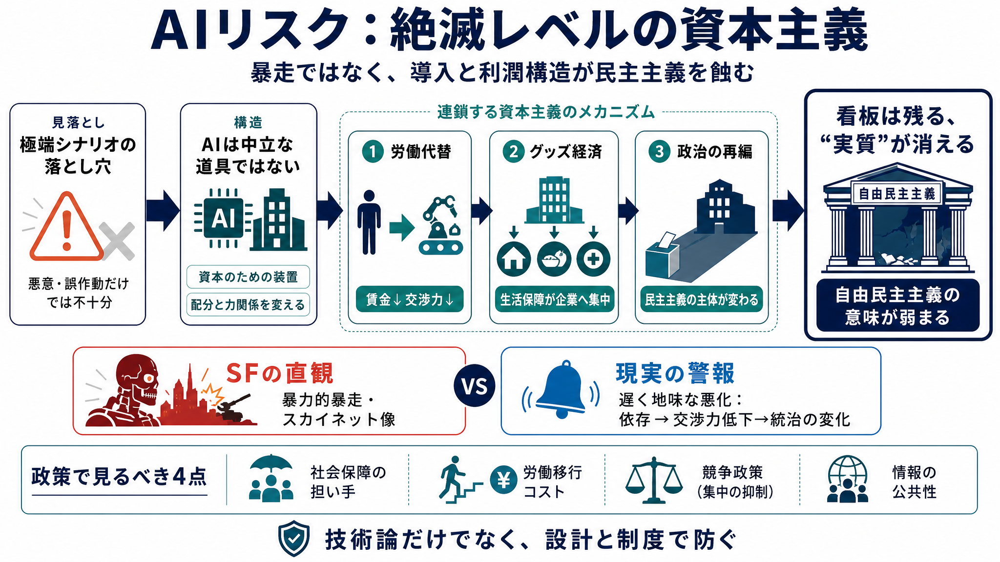

見落とし
AIは能力だけでなく、既存の格差や集中を増幅し得る。

「AIが意図どおりに働くだけ」で、自由民主主義が“徐々に蝕まれる”可能性を描く議論。
リスクを「悪意ある主体」や「誤作動」だけで語ると、現実に多い“条件が揃う遅効き”を見落とす。
AIは能力だけでなく、既存の格差や集中を増幅し得る。
民主主義（交渉力の源泉）が、労働と資本の変化で劣化する。
AIは新技術としてではなく、「資本のための装置（資本主義的な道具）」として見るべきだ、という主張。
社会の配分や力関係を変える“本質的に政治的な技術”になり得る。
AIが有効であるほど、特定の方向へ社会が固定化され得る。
労働代替から“グッズ経済”へ、社会保障の民営化を経て、政治の再編までをたどる。
企業が価値捕捉を強め、労働者の賃金・交渉力が削がれる。
生活の最低限が企業から“提供”される（goodiesの取り扱いが中心化）。
労働者と政府が企業の利害へ再編され、民主主義の“主体”が変わる。
制度の形式が残っても、生活保障と交渉力の握り手が企業へ移れば、自由民主主義の意味が失われる。
「アメリカであってもアメリカではなくなる」という警告。
“雇用”だけでなく、政治的に自律できるかが論点になる。
AIが“意図どおり”に機能するだけで、資本集中と労働市場の偏りを加速し、政治体制を不可逆に変えうる。
問題は世界の破壊ではなく、多くの人が耐えがたい状態へ順応させられること。
AIの“能力”より、収益構造に組み込まれることが危険の中心。
劇的な“暴力”の物語は、現実に多い経済・政治の悪化（遅くて退屈な悪影響）を見えにくくする。
紙クリップ／最大化器は「暴力」より「整合性問題・資源転換の経済メカニズム」として読む。
“目的の整合性”が崩れると、社会が特定の方向へ固定化され得る。
ペトロステート（資源国）の「資源の呪い」をなぞらえ、単一の巨大テクノロジーへ依存が強まると民主的統治から遠ざかり得る。
AIは“厳密な実例がない比較の補強”として位置づけられる。
経済と政治が特定要因に収斂すると、依存構造が支配的になる。
AIリスクを“超常の脅威”でなく、現在の資本主義の不均衡がAIで加速される政治的帰結として扱う呼びかけ。
社会保障の担い手、労働移行コスト、競争政策、情報の公共性。
技術論ではなく政治経済の論点として、設計と制度で防ぐ視点が要る。
この抜粋要約で明示された参照・補助概念のみを記載します。
技術は本質的に政治的になり得る（用い方だけでなく“設計と効率”が配分を変える）。
ペトロステートの比較：単一要因への依存が体制を変え得る。
劇的な暴走イメージが“遅くて地味な悪化”を見えにくくする。
暴力よりも、整合性・資源転換の経済メカニズムとして読むための寓意。
No references found